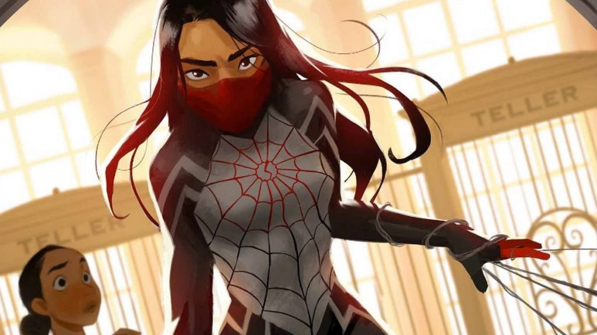

Sobre Teia de Seda
Nome real Cindy Moon, Teia de Seda é uma heroína que foi mordida por uma aranha radioativa e tem poderes de aranha.
Teia de Seda soltando suas teias.
Poderes
- Produz teia com os dedos.
- Força sobrehumana.
- Velocidade sobrehumana.
- Durabilidade sobrehumana.
- Reflexo sobrehumano.
- Equilíbrio sobrehumano.
- Sentido sentido precognitivo.
- Aderência a superfícies.
Aliados
Teia de Seda coleciona alguns aliados no universo aranha: